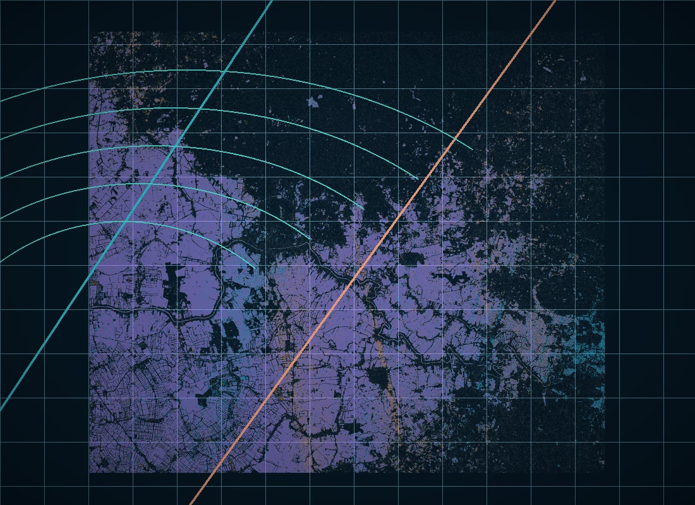

Descending vs ascending
Descending scores 0.802 and ascending 0.754. Their paired F1 difference is +0.048; the 95% interval crosses zero. A clear winner between the single orbits is not established by this test.
ΔF1 95% interval −0.055 to +0.147
Radar sees through clouds. But the direction it looks from changes what we detect. Explore three NISAR observations and discover what happens when we combine both viewing geometries.

When a radar image reveals water, which viewing direction tells the more complete story?
Every colored pixel comes from processed NISAR classifications in the study results. Select a date and a view to inspect the same landscape through different radar perspectives.
Interactive map requires JavaScript and Leaflet.
All four strategies were evaluated against the same 162 high-confidence automated Sentinel-2 optical proxy labels from the 30 September observation window.
Fusion OR records candidate water wherever either orbit detects it. This produces the strongest agreement with the optical proxy across the retained sample.
Descending scores 0.802 and ascending 0.754. Their paired F1 difference is +0.048; the 95% interval crosses zero. A clear winner between the single orbits is not established by this test.
Fusion AND yields the highest precision (0.976) but lower recall (0.388). Fusion OR prioritizes coverage, detecting more optical water while accepting some extra false positives.
Union candidate water totals 433.16 → 471.79 → 457.93 km² across the three radar observations. The September 6 record is a prior epoch, not an established dry baseline.
Area in km², derived from full-resolution raster counts for each orbit and the two fusion rules.
A defensible observation is more useful than an overstated claim. The interface separates radar-derived candidates, optical-proxy assessment and interpretation of event-related change.
NASA–ISRO NISAR L2 GCOV, HH/HV, ascending and descending passes on 06 Sep, 30 Sep and 12 Oct 2026. Native analytical grid: 10 m, UTM zone 47N.
Orbit-specific HH/HV classification and explicit brightening/ambiguity screening. Union, intersection and disagreement categories are derived from Stage 04–07 outputs.
162 clear, high-confidence automated Sentinel-2 spectral labels from two individual scenes within 48 hours of both orbit acquisitions on 30 Sep. 51 spatial blocks.
Results describe radar-derived candidate surface water and optical-proxy agreement, not independently observed inundation onset, water depth or crop losses. The 06 Sep baseline is not established as dry.
The map is not the conclusion. The comparison is.
Static GitHub Pages application, real NISAR-derived map assets, metric tables, provenance and a reproducible export script. Designed for review, not hidden behind a server or API key.